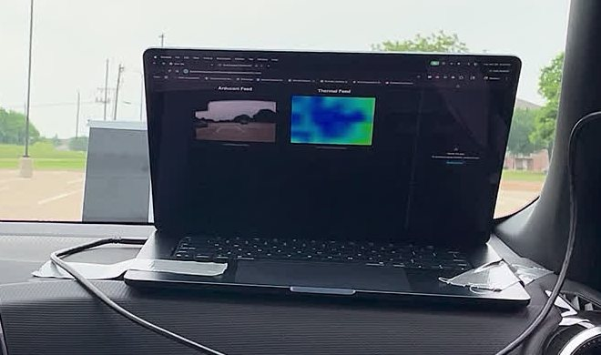
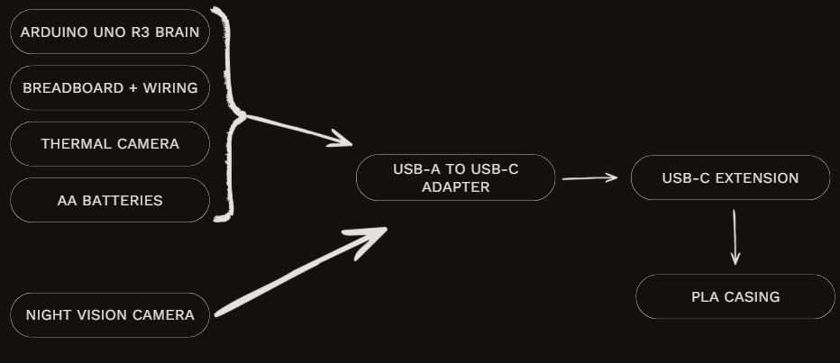
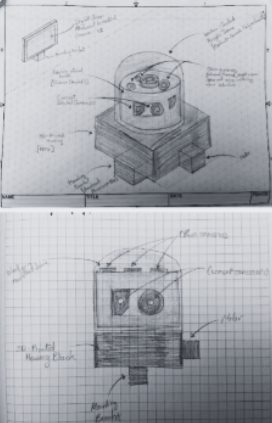
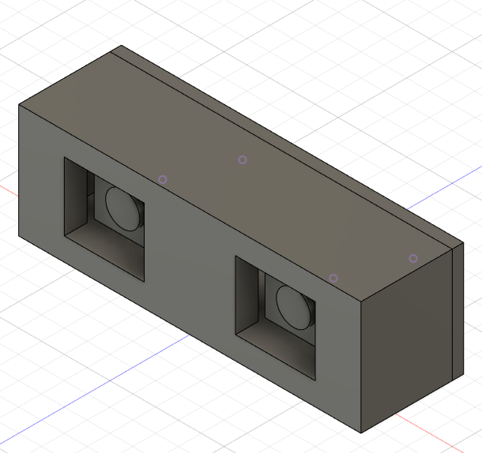
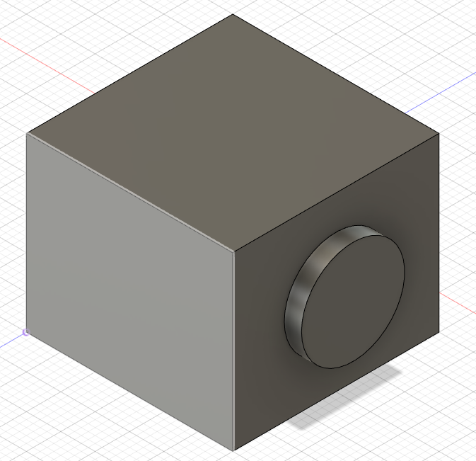
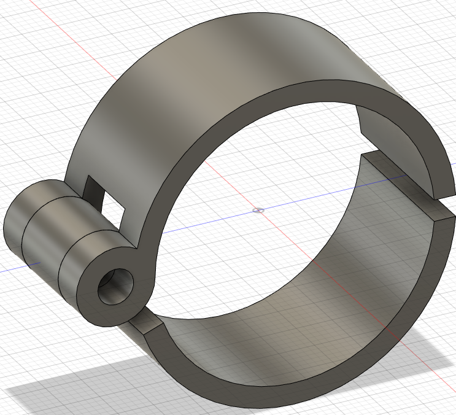
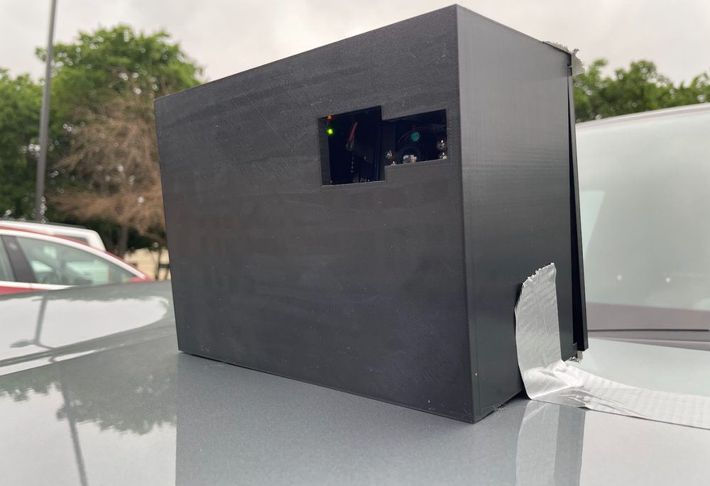
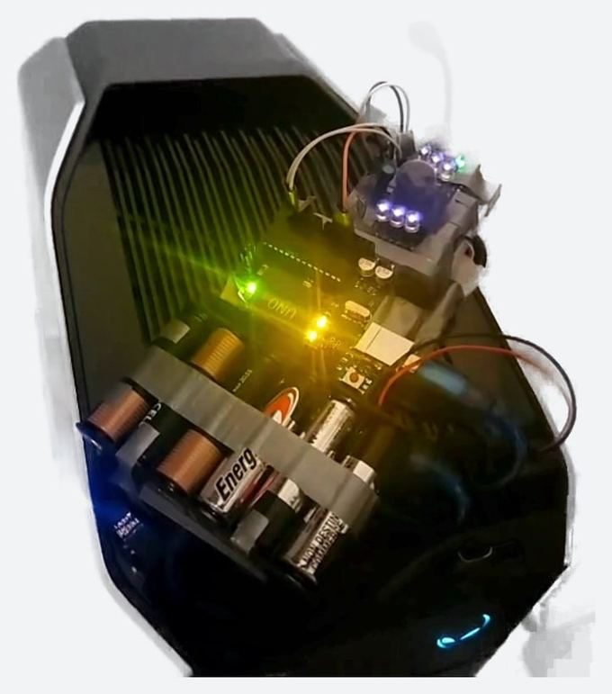
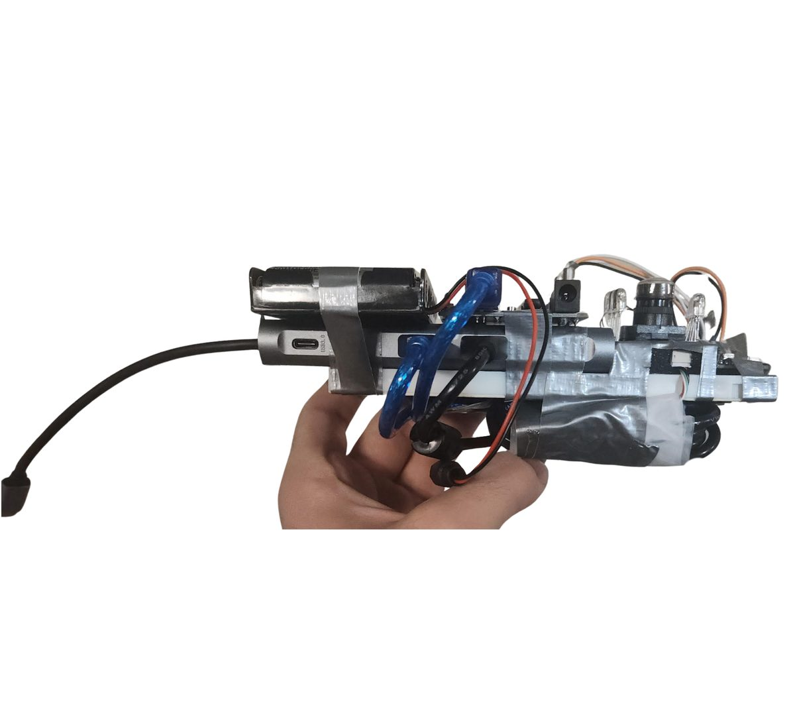

Mobil-Eyes
A vehicle-mounted thermal + night-vision attachment that gives a driver a second view of the road in fog, rain, and darkness. It supplements the driver's eyes and does not replace them. Presented to engineers at Garver.

My role
- Wrote the Arduino firmware that reads the AMG8833 over I²C and streams frames over USB serial.
- Soldered the AMG8833 and wired the UNO, sensor, and camera into one USB path.
- Built and mounted the housing and ran road tests with my teammate, Daksha Srinivasan.
System

| Part | Purpose |
|---|---|
| Arduino UNO R3 | Reads the thermal sensor, streams frames over serial |
| Adafruit AMG8833 8×8 thermal sensor | Heat-signature detection (64 px/frame, I²C) |
| Arducam 1080P USB night-vision camera | Visible + IR night vision |
| 3D-printed PLA housing | Holds both cameras on one forward axis |
| USB-A→C adapter + USB-C extension | One cable from outside the car into the cabin |
| AA battery pack | Power inside the housing |
How it works
Firmware (my code)
- Opens serial at
115200baud and starts the AMG8833. If the sensor doesn't respond, it prints a wiring hint and halts. - Each loop reads all 64 pixels in one I²C read and prints them as an 8×8 grid of °C values.
- Ends each frame with a
---line so the receiver can find frame boundaries. - Waits 50 ms before the next frame.
void loop() {
amg.readPixels(pixels); // one I2C read, 64 floats
for (int i = 1; i <= AMG88xx_PIXEL_ARRAY_SIZE; i++) {
Serial.print(pixels[i-1]);
Serial.print(", ");
if (i % 8 == 0) Serial.println(); // 8 values per row
}
Serial.println("---"); // frame separator
delay(50);
}Display
A browser-based web app parsed the serial stream, drew the thermal grid as a heat map next to the Arducam feed, and could switch between the two views. The web app was built with AI assistance, and its source was lost after the project, so it isn't published. The firmware and hardware integration are my work. The Arducam's day/night switching is the module's built-in preset, not code we wrote.
Design decisions

- Scope. We cut a rotating roof turret (motor lag, motion blur, weather wear), then an 8-camera perimeter array (too many feeds for one USB hub and one UNO), down to one forward-facing unit.
- Wi-Fi → wired USB. Streaming over Wi-Fi added about 2 s of lag, far too slow for a moving car. We ran a hardwired USB cable around the car frame into the cabin instead.
- Phone → laptop. Phones restrict external USB devices from sending input, as a security measure, so the phone connection wasn't reliable. We moved to a laptop, which also leaves room to integrate later with in-car systems like CarPlay or Android Auto.
- Mounting. We designed a clamp, but the tested unit was attached with industrial adhesive.



Build



- I overheated and destroyed the first AMG8833 while soldering. I replaced it and changed my technique (temperature and contact time).
- Breadboard jumpers shook loose during test drives. We secured them with adhesive and tighter cable management.
Results
- Reliable when stationary and at low speed. Above ~20 mph the display lagged behind the car's real position too much to use.
- Worked: universal USB adapter, consistent camera response, usable night-vision images, and the display stayed up through testing.
- Fell short: bulkier than planned; our budget limited camera range and precision.
Limitations
- Latency above ~20 mph is still an open problem.
- 8×8 thermal resolution shows that something warm is there, not what it is.
- Wired only, and the web-app source is lost.
Next steps
- A faster processor (for example a Raspberry Pi or Jetson Nano) in place of the UNO.
- A custom PCB instead of the breadboard.
- A low-latency link; a higher-range thermal sensor; possibly LiDAR for distance.
Credits
Teammate: Daksha Srinivasan. Mentors: Bryan Mueller (CompEdge), Dr. Sriram Chandrasekaran (Raytheon), Edgar Nunez (CTE Center). Thanks to Garver for the opportunity to present, and to our classmates for peer reviews.